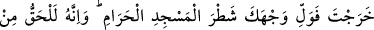
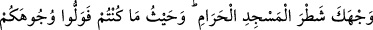
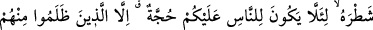
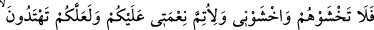
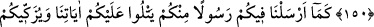
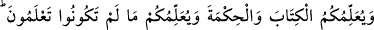
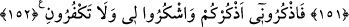

SİZ BENİ ANIN Kİ,
BEN DE SİZİ ANAYIM
148. Herkesin yöneldiği bir kıblesi vardır. (Ey mü’minler!) Siz hayır işlerinde
yarışın. Nerede olursanız olun sonunda Allah hepinizi biraraya getirir. Şüphesiz
Allah her şeye kadirdir.
149. Nereden yola çıkarsan çık (namazda) yüzünü Mescid-i Haram tarafına
çevir. Bu emir Rabbinden sana gelen gerçektir. (Biliniz ki) Allah yaptıklarınızdan
habersiz değildir.
150. (Evet Rasûlüm!) Nereden yola çıkarsan çık (Namazda) yüzünü Mescid-i
Haram’a doğru çevir. Nerede olursanız olunuz, yüzünüzü o yana çevirin ki,
aralarından haksızlık edenler (kuru inatçılar) müstesna, insanların aleyhinizde
(kullanabilecekleri) bir delili bulunmasın. Sakın onlardan korkmayın! Yalnız benden
korkun. Böylece size olan nimetimi tamamlayayım da doğru yolu bulasınız.
151. Nitekim kendi içinizden size âyetlerimizi okuyan, sizi kötülüklerden
arındıran, size Kitab’ı ve hikmeti tâlim edip bilmediklerinizi size öğreten bir Rasûl
gönderdik.
152. Öyle ise siz beni (ibâdetle) anın ki ben de sizi anayım. Bana şükredin; sakın
bana nankörlük etmeyin!
Müslüman, Yahûdî veya Hıristiyan, her ümmetin yöneldiği kendine özgü bir kıblesi ve